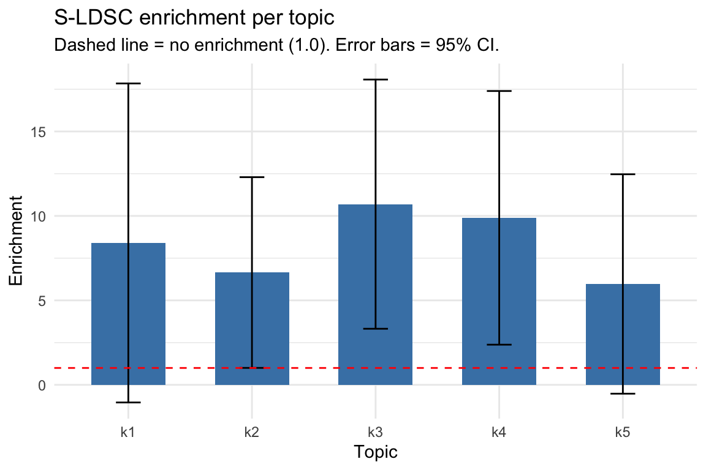
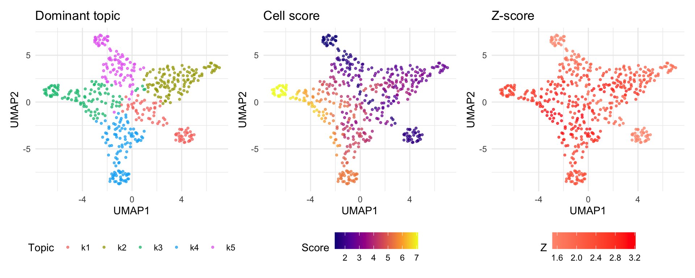

QuickStart.Rmdscads computes per-cell disease relevance scores from
scATAC-seq data and GWAS summary statistics. Give it a peak-by-cell
count matrix and GWAS sumstats, and it returns a score for every cell
indicating how disease-relevant that cell’s chromatin profile is.
scads ships with a demo dataset: 500 cells, 12,971 peaks
on chromosome 10, and simulated GWAS summary statistics.
The scads() function runs the entire pipeline in one
call. Before running, you need to set up paths to polyFUN, LDSC, and the S-LDSC reference
data (see the Step-by-Step Tutorial for
details on downloading reference data).
data_file <- system.file("extdata", "SIM_sumstats_chr10.txt.gz", package = "scads")
set.seed(1234)
scads_res <- scads(
demo_count_matrix,
nTopics = 5,
n_s = 1000,
n_c = 8,
baseline_method = "gc",
sumstats_dir = dirname(data_file),
gwas_nsamps = 45087,
gwas_trait = "SIM",
outdir = "~/scads_output/",
polyfun_code_dir = "~/polyfun/",
ldsc_code_dir = "~/ldsc/",
onekg_path = "~/LDSCORE/1000G_EUR_Phase3_plink/1000G.EUR.QC.",
baseline_dir = "~/LDSCORE/1000G_Phase3_baselineLD_v2.2_ldscores/baselineLD.",
frqfile_pref = "~/LDSCORE/1000G_Phase3_frq/1000G.EUR.QC.",
hm3_snps = "~/LDSCORE/hm3_no_MHC.list.txt",
weights_pref = "~/LDSCORE/1000G_Phase3_weights_hm3_no_MHC/weights.hm3_noMHC.",
chrs = 10,
genome = "hg19",
save_intermediates = TRUE,
verbose = TRUE
)The pipeline takes ~50 minutes on a MacBook Pro (M3 Max) for this demo (chr10 only, 5 topics). For the rest of this vignette, we load pre-computed results so you can explore the output immediately.
# Load pre-computed demo results
demo_res <- readRDS(system.file("extdata", "demo_results.rds", package = "scads"))Each topic represents a set of co-accessible peaks. S-LDSC tests whether GWAS heritability is enriched in each topic’s peaks. Enrichment > 1 means the topic’s peaks harbour more heritability than expected by chance.
ldsc_tab <- demo_res$ldsc_res_table
ldsc_tab$ASH_Enrichment <- demo_res$ash_PosteriorMean
ggplot(ldsc_tab, aes(x = Category, y = Enrichment)) +
geom_col(fill = "steelblue", width = 0.6) +
geom_errorbar(aes(ymin = Enrichment - 1.96 * Enrichment_std_error,
ymax = Enrichment + 1.96 * Enrichment_std_error),
width = 0.2) +
geom_hline(yintercept = 1, linetype = "dashed", color = "red") +
labs(title = "S-LDSC enrichment per topic",
subtitle = "Dashed line = no enrichment (1.0). Error bars = 95% CI.",
x = "Topic", y = "Enrichment") +
theme_minimal()
print(ldsc_tab[, c("Category", "Prop._SNPs", "Prop._h2", "Enrichment",
"Enrichment_std_error", "ASH_Enrichment")])
#> Category Prop._SNPs Prop._h2 Enrichment Enrichment_std_error ASH_Enrichment
#> 1 k1 0.014473 0.12158 8.4002 4.8179 1.804256
#> 2 k2 0.030417 0.20225 6.6492 2.8804 2.697942
#> 3 k3 0.024685 0.26406 10.6970 3.7634 7.089065
#> 4 k4 0.019800 0.19575 9.8865 3.8306 5.443484
#> 5 k5 0.022393 0.13373 5.9718 3.3137 1.291199The final output is a per-cell disease score that combines topic enrichments with each cell’s topic loadings.
cat("Cell score summary:\n")
#> Cell score summary:
print(summary(demo_res$cs))
#> Min. 1st Qu. Median Mean 3rd Qu. Max.
#> 1.291 2.472 3.544 3.780 5.172 7.089
cat("\nSignificant cells (p < 0.05):", sum(demo_res$p_cell < 0.05), "of",
length(demo_res$p_cell), "\n")
#>
#> Significant cells (p < 0.05): 413 of 500UMAP embeds cells in 2D based on their topic loadings. Coloring by cell score reveals which cell populations are most disease-relevant.
if (!requireNamespace("uwot", quietly = TRUE)) {
message("Install 'uwot' for UMAP: install.packages('uwot')")
} else {
library(patchwork)
set.seed(42)
umap_coords <- uwot::umap(demo_res$Lmat, n_neighbors = 350, min_dist = 0.8)
umap_df <- data.frame(
UMAP1 = umap_coords[, 1],
UMAP2 = umap_coords[, 2],
cell_score = demo_res$cs,
z_score = as.numeric(demo_res$z_cell),
topic = paste0("k", apply(demo_res$Lmat, 1, which.max))
)
p1 <- ggplot(umap_df, aes(x = UMAP1, y = UMAP2, color = topic)) +
geom_point(size = 0.8, alpha = 0.7) +
labs(title = "Dominant topic", color = "Topic") +
theme_minimal() + theme(legend.position = "bottom")
p2 <- ggplot(umap_df, aes(x = UMAP1, y = UMAP2, color = cell_score)) +
geom_point(size = 0.8, alpha = 0.7) +
scale_color_viridis_c(option = "C") +
labs(title = "Cell score", color = "Score") +
theme_minimal() + theme(legend.position = "bottom")
p3 <- ggplot(umap_df, aes(x = UMAP1, y = UMAP2, color = z_score)) +
geom_point(size = 0.8, alpha = 0.7) +
scale_color_gradient2(low = "blue", mid = "grey90", high = "red", midpoint = 0) +
labs(title = "Z-score", color = "Z") +
theme_minimal() + theme(legend.position = "bottom")
p1 + p2 + p3 + plot_layout(ncol = 3)
}
Cells dominated by topics with high enrichment (e.g., k3, k4) show elevated scores, while cells in low-enrichment topics score near the baseline.
chrs = 1:22 to run on all
chromosomes.resume_from_step to re-run specific steps without
starting over.